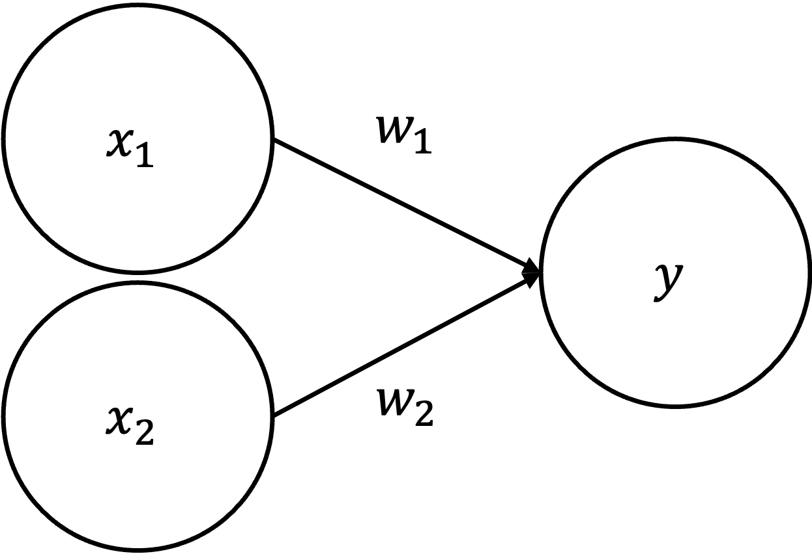
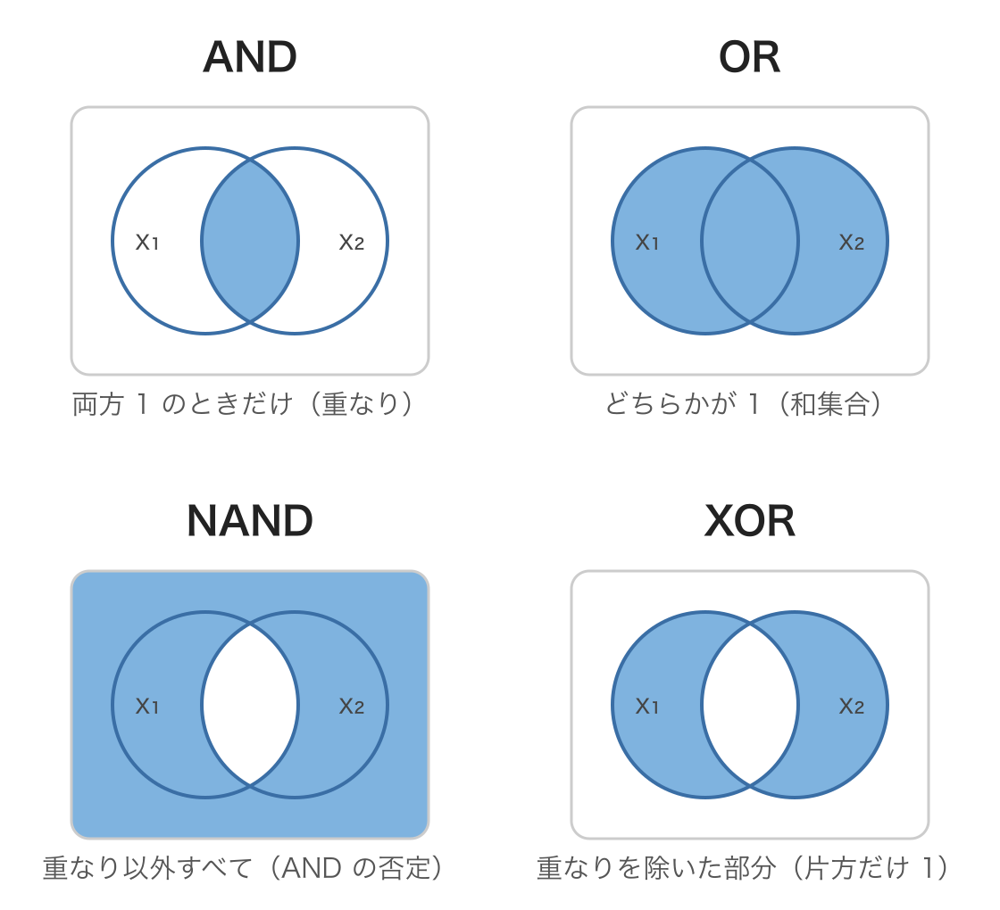
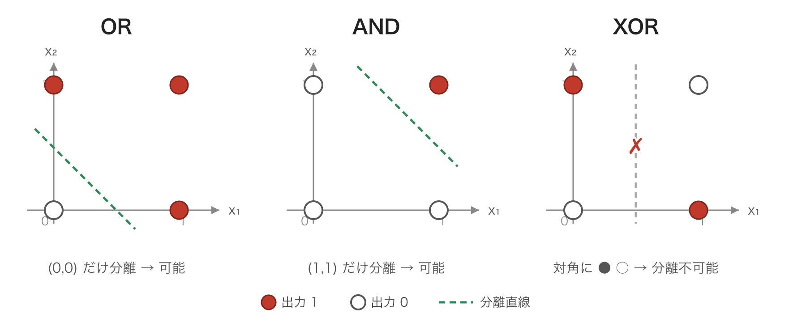
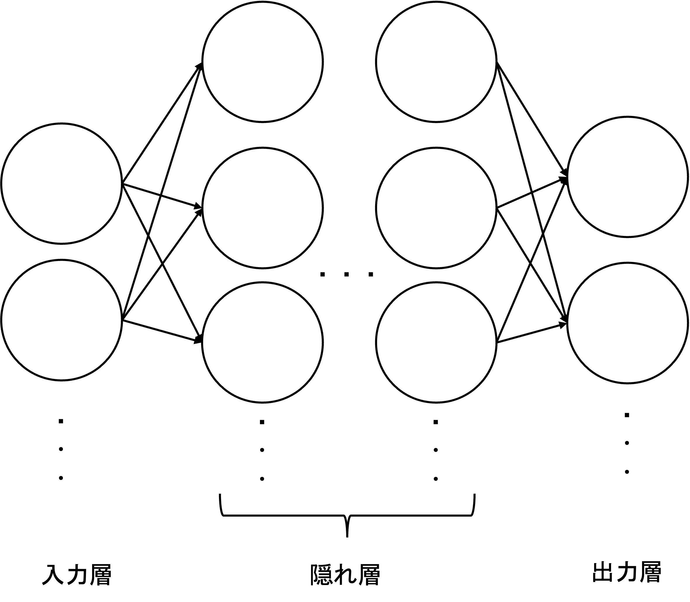
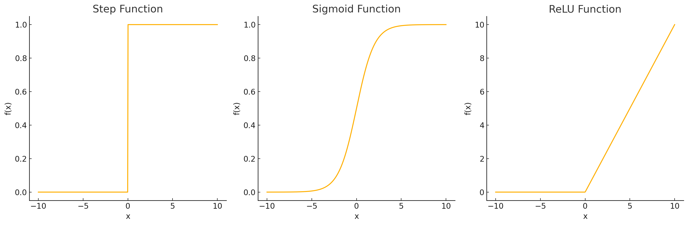
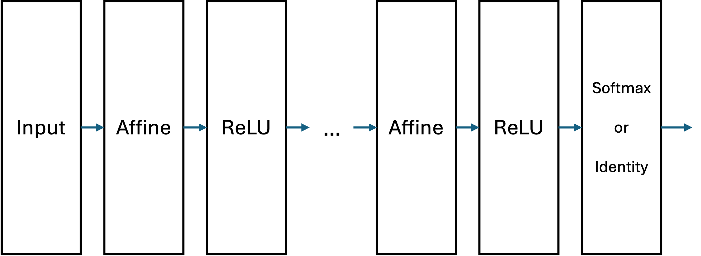
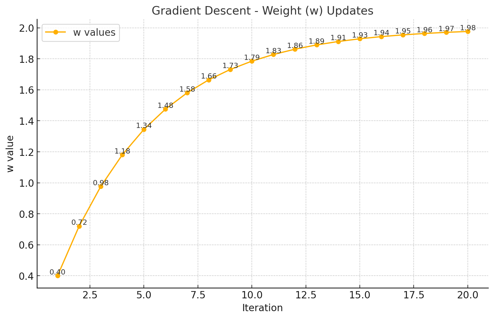
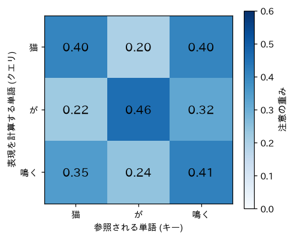
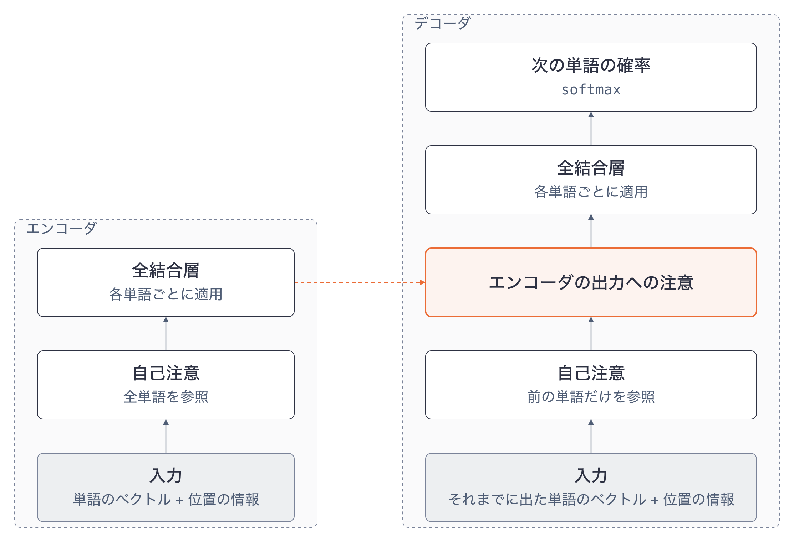
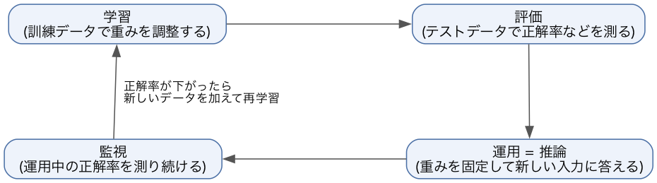

データサイエンス実践 Ch8 ニューラルネットワークと Transformer
資料
ニューラルネットワーク概要
この章から第10章までは, ニューラルネットワークを使って画像や文章などの非構造化データを扱います. 本章ではその土台として, ニューラルネットワークの構成と学習, 文章のような並びを扱う Transformer と注意機構, 正解を人手で付けずに学ぶ自己教師あり学習, 学習したモデルを使い続けるための評価と再学習を扱います.
この講義では, ニューラルネットワークを自分で開発して学習させることはしません. そのため本章ではプログラムを書かず, 図と手計算で仕組みを説明します. 例として, 手書きの数字の認識と, 「猫が鳴く」という短い文の 2 つを使います. 実際にモデルを動かすのは, 第9章 (画像認識) と 第10章 (自然言語処理) です.
パーセプトロン
ニューラルネットワーク (Neural Network) は, 人間の脳の神経回路を模倣した数学モデルです. 脳は 1000 億個のニューロン (神経細胞) が軸索を通じて結合したネットワークです. あるニューロンが受け取った電気信号が一定の閾値を超えると, そのニューロンも電気信号を発し, つながっている先のニューロンへ伝えます. この仕組みを数学的に模倣したものがパーセプトロンです.

上図のパーセプトロンでは, 2 つのニューロンから発せられた信号 (x_1, x_2 = 0, 1) が, それぞれ重み (w_1, w_2) を掛けられて y に伝わります. 重みは, それぞれのニューロンからの信号の重要性を表します. 例えば, yを以下のように定めると, yは重み付けされたx_1,x_2が特定の閾値\thetaを超えると1, 超えなかった場合は0を発するという意味になります.
y = \begin{cases} 1 & (w_1x_1 + w_2x_2 > \theta) \\ 0 & (w_1x_1 + w_2x_2 \leq \theta) \end{cases}
パーセプトロンはコンピュータの計算における論理演算との関連が深く, 論理演算を実装することができます.
例えば, AND演算とOR演算を考えてみましょう. TRUEを1, FALSEを0とした場合のそれぞれの真偽値表は, 以下のようになります.
- AND
| x_1 | x_2 | ~y~ |
|---|---|---|
| 0 | 0 | 0 |
| 1 | 0 | 0 |
| 0 | 1 | 0 |
| 1 | 1 | 1 |
- OR
| x_1 | x_2 | ~y~ |
|---|---|---|
| 0 | 0 | 0 |
| 1 | 0 | 1 |
| 0 | 1 | 1 |
| 1 | 1 | 1 |
論理ゲートは AND・OR だけではありません. AND の否定である NAND (両方が 1 のときだけ 0) や, 片方だけが 1 のときに 1 になる XOR (排他的論理和) など, いくつかの基本的なゲートがあります. それぞれが「どんな入力のときに 1 を出すか」は, 2 つの集合の重なりとして描くと直感的に理解できます. 円 A を「x_1 = 1」, 円 B を「x_2 = 1」とし, 塗りつぶした領域が出力 1 になる入力の組み合わせを表します (重なり=両方 1, 外側=両方 0).

- AND: 両方が 1 のときだけ 1 = 2 つの円の 重なり だけを塗る.
- OR: どちらかが 1 なら 1 = 2 つの円の 和集合 を塗る.
- NAND: AND の否定 = 重なり以外すべて (外側も含む) を塗る.
- XOR: 片方だけが 1 のとき 1 = 重なりを除いた 左右の三日月 を塗る.
まずはこの図で各ゲートが「何をする演算なのか」を掴んでおきましょう.
このような演算は例えば以下のようにw_1,w_2,\thetaを定めると実現できます.
AND
y = \begin{cases} 1 & (x_1 + x_2 > 1) \\ 0 & (x_1 + x_2 \leq 1) \end{cases}
OR
y = \begin{cases} 1 & (0.5x_1 + 0.5x_2 > 0.2) \\ 0 & (0.5x_1 + 0.5x_2 \leq 0.2) \end{cases}
このとき, 例えばOR演算を実装するyを, y = f(w_1x_1+w_2x_2) として,
f(x) = \begin{cases} 1 & (x > 0.2) \\ 0 & (x \leq 0.2) \end{cases}
のように表すことができます. このような特定のニューロンの発火の有無を決める関数を活性化関数 (activation function) と呼びます.
パーセプトロンでは, 活性化関数として, 特定の閾値に重み付け入力合計値が達するか否かによって出力が0か1のいずれかになります. このような, 0/1が特定の閾値で極端に切り替わる関数をステップ関数, 階段関数などと呼びます.
重みとバイアスでゲートを切り替える
上の AND・OR は, いずれも「重み付き入力の合計がある閾値を超えたら発火する」という同じ仕組みを使っており, 違うのは重み w_1,w_2 と閾値だけでした. 閾値 \theta を左辺に移してバイアス b = -\theta と書き直すと, どのゲートも
y = \begin{cases} 1 & (w_1 x_1 + w_2 x_2 + b > 0) \\ 0 & (\text{otherwise}) \end{cases}
という一つの式で表せます. つまり重み w_1,w_2 とバイアス b という3つのパラメータを変えるだけで, 同じパーセプトロンが別の論理ゲートに変わります. 代表的なゲートのパラメータ例は以下の通りです.
| ゲート | w_1 | w_2 | b | 意味 |
|---|---|---|---|---|
| AND | 0.5 | 0.5 | -0.7 | 両方 1 のときだけ発火 |
| OR | 0.5 | 0.5 | -0.2 | どちらか 1 なら発火 |
| NAND | -0.5 | -0.5 | 0.7 | AND の否定 (両方 1 のときだけ 0) |
NAND (Not AND) は重みとバイアスの符号を AND と反転させたもので, 両方の入力が 1 のときだけ 0 を, それ以外では 1 を出力します.
単層では作れないゲート: XOR と線形分離可能性
ところが, XOR (排他的論理和) だけは, 上のように重みとバイアスを選んでも1個のパーセプトロンでは絶対に表現できません.
| x_1 | x_2 | ~y~ |
|---|---|---|
| 0 | 0 | 0 |
| 1 | 0 | 1 |
| 0 | 1 | 1 |
| 1 | 1 | 0 |
なぜ作れないのかは, 入力平面 (x_1, x_2) に 4 通りの入力を点として打ってみると分かります. パーセプトロンの発火条件 w_1 x_1 + w_2 x_2 + b > 0 は, 境界 w_1 x_1 + w_2 x_2 + b = 0 という 1 本の直線で「出力 1 の点」と「出力 0 の点」を分ける ことに対応します. このように直線で分離できることを 線形分離可能 (linearly separable) といいます.

上図のように, OR は出力 0 の (0,0) だけを, AND は出力 1 の (1,1) だけを, それぞれ 1 本の直線で切り離せます. ところが XOR は, 出力 1 の (1,0), (0,1) と出力 0 の (0,0), (1,1) が 対角に交互 に並ぶため, どんな直線を引いても必ず片側に 1 と 0 が混ざり, 分離できません. これが, 単一のパーセプトロンで XOR を表現できない理由です.
そこで, XOR は 複数のゲートを組み合わせる (層を重ねる) ことで実現します. 例えば
\text{XOR}(x_1, x_2) = \text{AND}\bigl(\text{NAND}(x_1, x_2),\ \text{OR}(x_1, x_2)\bigr)
と書けます. 1段目で NAND と OR を並列に計算し, その2つの出力を2段目の AND に入力する 2層構成 です. このように, 単層では表せない関数も層を重ねれば表せるという事実が, 次節で述べる多層ニューラルネットワークの出発点になります.
なお, ここで挙げた AND・OR・NAND・XOR は, 関数型言語の演習として実際に Haskell で実装できます. 「同じ
perceptron関数の部分適用で各ゲートを作り, それらを合成して XOR を組む」例は 関数型プログラミング講義 fp5 の Exercise CH5-6 を参照してください.
この節に対応する演習は, 章末のExercise DSP8-1です.
ニューラルネットワークの構成
これまでに説明してきたパーセプトロンは, 入力 x_1, x_2 の層と, 入力を受け取る y の層の 2 層からなります. ニューロンの数や層の数を増やすと, より複雑な条件を表現できます.
基本的なニューラルネットワークではネットワークを入力層, 隠れ層, 出力層の3層に分類します.

ここで隠れ層において n 個の入力ニューロン(x_1,x_2,...,x_n)からm個の出力ニューロン(y_1,y_2,...,y_m)に入力がある場合, 各出力ニューロンの発火条件は以下のように行列形式で表現されます.
\begin{align*} &Y = f(WX + B) \\ &W: 重み行列 ; (m \times n) \\ &X: 入力ベクトル ; (n \times 1) \\ &B: バイアスベクトル ; (m \times 1) \\ &f: 活性化関数 (要素ごとに適用される非線形関数) \\ &Y: 出力ベクトル ; (m \times 1) \\ \end{align*}
具体的には, 重み行列 W, 入力ベクトル X, バイアスベクトル B を以下のように定義します.
各入力ニューロン x_i から出力ニューロン y_j への接続には重みが存在し, それを w_{ij} とします. このとき, 重み行列 W は次のように表されます:
W = \begin{bmatrix} w_{11} & w_{12} & \cdots & w_{1n} \\ w_{21} & w_{22} & \cdots & w_{2n} \\ \vdots & \vdots & \ddots & \vdots \\ w_{m1} & w_{m2} & \cdots & w_{mn} \end{bmatrix}
入力ベクトル X : X = \begin{bmatrix} x_1 \\ x_2 \\ \vdots \\ x_n \end{bmatrix}
バイアスベクトル B : B = \begin{bmatrix} b_1 \\ b_2 \\ \vdots \\ b_m \end{bmatrix}
出力ベクトル Y : Y = \begin{bmatrix} y_1 \\ y_2 \\ \vdots \\ y_m \end{bmatrix}
このとき, 発火条件は活性化関数を利用して以下のように計算されます.
Y = f(WX + B)
単純なニューラルネットワークでは, 隠れ層において, 全てのニューロンが結合している全結合層 (Affine Layer) が使用されています. 全結合層は, 行列演算を用いて入力データを重み付けし, バイアスを加算する操作を行います. これにより, ネットワークが入力データの全体的な特徴を学習することが可能になります.
パーセプトロンでは, 活性化関数としてステップ関数が利用されており, その出力は必ず0か1でした.
ニューラルネットワークでは, 通常, 非線形のシグモイド関数やReLU 関数 (Rectified Linear Unit function) などが利用され出力が0,1以外の値を取ります.
シグモイド関数
f(x) = \frac{1}{1+\exp(-x)}
出力を 0 から 1 の範囲に変換するため, 確率を表現する場面で使われることがあります.
ReLU
f(x) = \begin{cases} x & (x > 0) \\ 0 & (x \leq 0) \end{cases}
ReLUは計算が効率的で, 学習を早める効果があるため, 現在最も広く利用されている活性化関数です.

出力層では, 解きたい問題の性質に応じて適切な活性化関数が選択されます.
- 回帰問題 (数値を予測する場合):
出力層には恒等関数 (Identity Function) が使用されます. この場合, 出力はそのまま数値として扱われます.
f(x) = x
- 分類問題 (カテゴリを予測する場合):
出力層には softmax 関数が使用されることが一般的です. softmax 関数は, 出力を確率分布に変換します.
f(x_i) = \frac{e^{x_i}}{\sum_{j} e^{x_j}} \\
x_i : i番目の出力ニューロンの値, f(x_i) : i 番目のカテゴリの確率, \sum_j f(x_j) = 1 : 全てのカテゴリの確率の総和が1になる.
softmax 関数は, 手書き文字認識や画像分類タスクのように, 複数のクラスを予測する場面で広く使われています.
これらの層を組み合わせると, 一般的なニューラルネットワークは次の構造になります.

この節に対応する演習は, 章末のExercise DSP8-1です.
ニューラルネットワークの学習
パーセプトロンはそれぞれの重みを人間が設定する必要がありました. しかし, 複雑な条件を満たすネットワークの重みを人間が設定するのは現実的ではありません. そこで, それぞれの重みを機械学習によってデータから自動で学ぶようにしたものがニューラルネットワークです.
ニューラルネットワークの学習では, ネットワーク内の重み (w_1, w_2, \dots, w_n) とバイアス (b) の値を適切に調整することで, モデルが入力データから期待される出力を生成できるようにします. このプロセスは次の手順で進行します.
順伝播と損失関数の計算
入力データをネットワークに通し, 各層のニューロンで計算が行われ, 最終的な出力が生成されます. この出力は予測値として解釈されます. このようなデータに基づく計算の過程を順伝播 (Forward Propagation) といいます.
例えば, 手書きの 0 から 9 の数字を認識するタスクでは, m \times n ピクセルの画像データが入力され, 最終出力層で 0 から 9 のいずれかを予測します.
学習のためにはネットワークの予測値と実際の正解データとの差を数値化して, より良い重みを発見する必要があります. その際の予測値と正解データとの差を数値化するための関数を損失関数と呼びます. この損失関数は, ネットワークがどれだけ誤った予測をしているかを示す指標となります.
一般的な損失関数の例:
平均二乗誤差 (Mean Squared Error, MSE): 回帰タスクで使用 L = \frac{1}{N} \sum_{i=1}^{N} (y_i - \hat{y}_i)^2
交差エントロピー損失 (Cross-Entropy Loss): 分類タスクで使用
L = -\sum_{k=1}^{K} y_k \log(\hat{y}_k)
平均二乗誤差の N はデータの数, y_i は正解の値, \hat{y}_i は予測値です. 交差エントロピー損失は 1 つのデータについての式で, K はクラスの数, y_k は正解のクラスなら 1, それ以外なら 0, \hat{y}_k はモデルがクラス k に付けた確率です. y_k は正解のクラスでだけ 1 なので, 和の中で残るのは正解のクラスの項だけになり, 損失は「正解のクラスに付けた確率の対数に負号を付けたもの」になります.
逆伝播と重みの修正
ニューラルネットワークでは損失関数を基に, 誤差をネットワーク内で逆方向に伝播させ, 各ニューロンの重みとバイアスを更新します. これを誤差逆伝播法 (Backpropagation) といいます. このとき, 微分を用いて重みやバイアスがどの程度影響を与えるかを計算します.
- 勾配降下法 (Gradient Descent)
逆伝播によって得られた勾配を用いて, 重みとバイアスを更新する手法の最も基本的なものとして勾配降下法があります
W_{new} = W_{old} - \eta \frac{\partial L}{\partial W}
ここで, L は損失関数, \frac{\partial L}{\partial W} は重み W に関する損失関数の勾配, \eta は重みの更新量を決める定数 (学習率, learning rate) です.
例として, シンプルな1次元関数の最小化を考えます. L(w) = (w - 2)^2 ここで, 最小値は w = 2 です.
- 初期値を w = 0 , 学習率を \eta = 0.1 とします.
- 勾配を計算します.
\frac{\partial L}{\partial w} = 2(w - 2) 初期値 w = 0 のとき, \frac{\partial L}{\partial w} = -4
- 重みを更新します. w_{new} = w_{old} - \eta \cdot \frac{\partial L}{\partial w} w_{new} = 0 - 0.1 \cdot (-4) = 0.4
この処理を繰り返していくと重みは理論的な最小値の2に近づいていきます.

繰り返し学習
順伝播, 損失計算, 逆伝播のプロセスを繰り返し, ネットワークが徐々にデータの特徴を学習します. この反復的なプロセスをエポック (Epoch)と呼びます. 十分なエポックを実行することで, モデルは訓練データに対して高い精度を達成することが期待されます.
学習では, 全てのデータを一度に処理するのではなく, バッチ処理 (Batch Processing) と呼ばれる手法を使用するのが一般的です. データセットをいくつかの小さなグループ (バッチ) に分割し, 各バッチごとに順伝播と逆伝播を実行します.
データセットをいくつかの小さなバッチに分割して処理する手法をミニバッチ学習 (mini-batch learning) といいます. 一度に計算するデータが少ないのでメモリの使用量を抑えられ, バッチ内のデータを GPU で並列に計算できます. また, 1 つのデータごとに重みを更新するより, 勾配のばらつきが抑えられます.
例えば, データセットが10,000個のサンプルで構成されている場合, バッチサイズを100に設定すると, モデルは100個のデータを1つのバッチとして扱い, 全部で100のバッチを処理することになります. 1エポックでは100回の更新が行われ, これを複数回繰り返して学習が進行します.
ミニバッチ学習はモデルの効率的な学習とメモリ使用量のバランスを取るため, 実務で最も一般的に使われています. 例えば, バッチサイズを32や64に設定することが多いです.
この節に対応する演習は, 章末のExercise DSP8-1です.
Transformer と注意機構
Transformer は, 文章のような並びのデータを扱うために 2017 年に提案されたニューラルネットワークの構成です. 第10章で使う BERT も, 対話型の生成 AI の中で動いている大規模言語モデルも, Transformer を土台にしています. Transformer の中心にあるのが注意機構 (attention) です.
系列データと注意機構
文章, 音声, 株価の推移のように, 要素の並び順に意味があるデータを系列データといいます. 文章は単語 (正確にはトークンと呼ばれる, 単語や文字の断片) の並びとして扱います. 例として, 「猫が鳴く」という文を「猫」「が」「鳴く」の 3 つのトークンに分けて扱います.
ニューラルネットワークは数値しか扱えないので, 各トークンを数値の組 (ベクトル) で表します. このベクトルは, 意味の近いトークンほど近くなるように学習で決まります (第4章の距離と類似度の考え方です). この例では手計算のために, 2 つの数値の組で表すことにします.
| トークン | ベクトル |
|---|---|
| 猫 | \boldsymbol{x}_1 = (1, 0) |
| が | \boldsymbol{x}_2 = (0, 1) |
| 鳴く | \boldsymbol{x}_3 = (1, 0.5) |
単語の意味は, 周りの単語によって変わります. 「鳴く」は「猫が鳴く」と「鳥が鳴く」で思い浮かべる声が違いますし, 「かける」は「電話をかける」と「眼鏡をかける」で意味が違います. そのため, 各トークンのベクトルを文の中の他のトークンの情報で補ってから使うと, 文脈に応じた表現が得られます.
注意機構は, 各トークンについて, 文中のすべてのトークンのベクトルに重みを付けて足し合わせ, そのトークンの新しいベクトルとする仕組みです. 重みは, 2 つのトークンのベクトルがどれだけ似ているかから計算します. 「鳴く」の新しいベクトルを求める手順は次のとおりです.
- 「鳴く」のベクトルと, 各トークンのベクトルの内積を求めます. 内積は, 対応する成分同士を掛けて足した値で, 2 つのベクトルの向きが揃っていて長いほど大きくなります (第4章のコサイン類似度の分子にあたります).
- 内積をベクトルの次元の数 d の平方根 \sqrt{d} で割ります. 次元が大きいほど内積は大きな値になりやすいので, その影響を打ち消すための調整です.
- 2 の値を softmax 関数 (ニューラルネットワークの構成の出力層で使った関数) に通し, 合計が 1 になる重みに変えます. この重みを注意の重みといいます.
- 注意の重みで各トークンのベクトルを重み付けして足し合わせます.
「鳴く」(\boldsymbol{x}_3) について, 実際に計算してみましょう. d = 2 なので \sqrt{2} \approx 1.414 です.
| 参照するトークン | 1. 内積 | 2. \sqrt{2} で割る | e^{(2 の値)} | 3. 注意の重み |
|---|---|---|---|---|
| 猫 | 1 \times 1 + 0.5 \times 0 = 1 | 0.707 | 2.028 | 2.028 / 5.873 \approx 0.35 |
| が | 1 \times 0 + 0.5 \times 1 = 0.5 | 0.354 | 1.424 | 1.424 / 5.873 \approx 0.24 |
| 鳴く | 1 \times 1 + 0.5 \times 0.5 = 1.25 | 0.884 | 2.420 | 2.420 / 5.873 \approx 0.41 |
| 合計 | 5.873 | 1 |
4 の重み付きの和は次のようになります.
0.35 \times (1, 0) + 0.24 \times (0, 1) + 0.41 \times (1, 0.5) \approx (0.76, 0.45)
「鳴く」の新しいベクトル (0.76, 0.45) は, もとの (1, 0.5) に「猫」と「が」の情報が混ざったものです. 同じ計算を「猫」と「が」についても行うと, 注意の重みは次の図のようになります. 行が新しいベクトルを計算するトークン, 列が参照されるトークンで, 各行の重みの合計は 1 です.

この例ではベクトルを手で決めたので, 重みの大小に深い意味はありません. 実際のモデルでは, 文脈を捉えるのに役立つ重みになるように, トークンのベクトルと次の節の変換を学習で決めます. 例えば「鳴く」の意味を決めるには, 誰が鳴いているかを表す「猫」に大きな重みが付くように学習されます.
この節に対応する演習は, 章末のExercise DSP8-2です.
自己注意と Transformer の構成
上の計算では, 1 つのベクトルを 3 つの役割で使っていました. 重みを計算する側 (「鳴く」), 重みを計算される側 (各トークン), 足し合わされる中身 (各トークン) です. Transformer では, 各トークンのベクトル \boldsymbol{x}_i から, 役割ごとに別のベクトルを作ります.
- クエリ (Query) \boldsymbol{q}_i = W_Q \boldsymbol{x}_i: 重みを計算する側のベクトル. 「どんな情報を探しているか」を表す.
- キー (Key) \boldsymbol{k}_j = W_K \boldsymbol{x}_j: 重みを計算される側のベクトル. 「どんな情報を持っているか」を表す.
- バリュー (Value) \boldsymbol{v}_j = W_V \boldsymbol{x}_j: 足し合わされる中身のベクトル.
W_Q, W_K, W_V は, ニューラルネットワークの構成の重み行列 W と同じく, 学習で決まる行列です. トークン i の新しいベクトル \boldsymbol{z}_i は, 前節の手順の「内積」をクエリとキーの内積に, 「足し合わせる中身」をバリューに置き換えて計算します.
a_{ij} = \frac{\exp\left( \boldsymbol{q}_i \cdot \boldsymbol{k}_j / \sqrt{d} \right)}{\sum_{l=1}^{n} \exp\left( \boldsymbol{q}_i \cdot \boldsymbol{k}_l / \sqrt{d} \right)}, \qquad \boldsymbol{z}_i = \sum_{j=1}^{n} a_{ij} \boldsymbol{v}_j
ここで n はトークンの数, a_{ij} はトークン i がトークン j に付ける注意の重みです. 全トークンのクエリ, キー, バリューを行に並べた行列を Q, K, V とすると, 全トークン分の計算を 1 つの式で書けます.
\text{Attention}(Q, K, V) = \text{softmax}\left( \frac{Q K^{\top}}{\sqrt{d}} \right) V
Q K^{\top} は, すべてのクエリとキーの組の内積を並べた n \times n の表で, 上の図の注意の重みの表のもとになる値です. softmax は行ごとに適用します. 前節の手計算は, W_Q, W_K, W_V をすべて単位行列 (ベクトルを変えない行列) にした場合にあたります.
同じ文の中のトークン同士で注意の重みを計算するので, この仕組みを自己注意 (self-attention) といいます. 実際の Transformer では, 異なる W_Q, W_K, W_V の組を複数用意して自己注意を並列に計算し, 結果をつなげて使います (マルチヘッド注意). 組ごとに, 主語と述語の関係, 近くの単語との関係のように, 異なる種類の関係を捉えられます.
自己注意の計算には, トークンの並び順が入っていません. 「猫が鳴く」と「鳴くが猫」で, 各トークンが受け取る重み付きの和は同じになります. そこで, 各トークンのベクトルに「文の何番目か」を表すベクトルを足してから入力します. これを位置の情報 (位置エンコーディング) といいます.
Transformer は, 自己注意と, トークンごとに同じ全結合層を適用する層を 1 組として, これを何段も積み重ねた構成です. 全体は, 入力の文を読み取るエンコーダと, 出力の文を 1 トークンずつ作るデコーダに分かれます.

- エンコーダの自己注意は, 文中のすべてのトークンを参照します. 文の前後の両方から文脈を取り込めるので, 文の意味を読み取るのに向きます. 第10章の BERT は, エンコーダだけを積み重ねたモデルです.
- デコーダの自己注意は, 自分より前のトークンだけを参照します. これから作るトークンは, 作る時点ではまだ存在しないからです. 1 トークンずつ文を作っていく生成に向き, 対話型の生成 AI で使われる大規模言語モデル (GPT など) は, デコーダだけを積み重ねたモデルです. GPT などはエンコーダを持たないので, 図の「エンコーダの出力への注意」を除いたデコーダを積み重ねます. 生成の仕組みは第10章で扱います.
もとの Transformer は機械翻訳のために作られ, エンコーダで翻訳前の文を読み取り, デコーダがその出力に注意を向けながら翻訳後の文を作ります (図の破線).
この節に対応する演習は, 章末のExercise DSP8-2です.
自己教師あり学習
第6章の教師あり学習では, データと正解のペア (訓練データ) から学習しました. 正解は人が付ける必要があるので, 大量のデータを用意するには時間と費用がかかります. 画像ごとに写っているものを書き込む, 文章ごとに肯定的か否定的かを判定する, といった作業です.
自己教師あり学習 (self-supervised learning) は, データの一部を隠し, 隠した部分を残りから当てる問題を作って学習する方法です. 隠した部分そのものが正解になるので, 人が正解を付ける必要がありません. 文章なら, インターネット上の大量の文章をそのまま訓練データにできます. 文章での代表的な問題の作り方は 2 つあります.
| 問題の作り方 | 入力 | 正解 | 使うモデル |
|---|---|---|---|
| マスク予測: 文の途中のトークンを隠して当てる | 猫 が [MASK] | 鳴く | エンコーダ (BERT) |
| 次トークン予測: それまでのトークンから次のトークンを当てる | 猫 が | 鳴く | デコーダ (GPT など) |
[MASK] は「ここを隠した」ことを表す特別なトークンです. マスク予測では隠した位置の前後を参照できるので, 前後の両方を見るエンコーダで学習します. 次トークン予測では前のトークンだけを参照するので, デコーダで学習します.
どちらの問題も, 第6章の分類と同じ形をしています. モデルは語彙 (モデルが扱うトークンの一覧) のそれぞれについて「隠したトークンがこれである確率」を softmax で出力し, 正解のトークンの確率が大きくなるように重みを調整します. 損失関数には, ニューラルネットワークの学習で紹介した交差エントロピー損失を使います. 正解が 1 つのトークンのときは, 正解のトークンに付けた確率を p として, 損失は次の式になります.
L = -\log p
語彙が「猫」「が」「鳴く」「走る」の 4 つだけだとして, 「猫 が [MASK]」に対するモデルの出力が次のようだったとします.
| トークン | 猫 | が | 鳴く | 走る |
|---|---|---|---|---|
| モデル A の確率 | 0.05 | 0.05 | 0.70 | 0.20 |
| モデル B の確率 | 0.05 | 0.05 | 0.20 | 0.70 |
正解は「鳴く」なので, モデル A の損失は -\log 0.70 \approx 0.36, モデル B の損失は -\log 0.20 \approx 1.61 です. 正解に大きな確率を付けたモデルほど損失が小さくなります. 学習では, 大量の文から作った問題すべてについて損失の平均を求め, 勾配降下法でこれを小さくする方向に重みを更新します.
自己教師あり学習で身に付くのは, 特定の課題の解き方ではなく, 「どんな文脈でどんなトークンが来やすいか」という言語全体の傾向です. そのため, 大量の文章で自己教師あり学習をしたモデル (事前学習済みのモデル) を出発点にして, 少量の正解付きデータで個別の課題に合わせて追加の学習 (ファインチューニング) をする, という 2 段階の使い方が広く行われています. 第10章では, 事前学習済みの BERT を, 文章の感情を分類する課題にファインチューニングします.
この節に対応する演習は, 章末のExercise DSP8-3です.
AI の学習と推論, 評価, 再学習
ニューラルネットワークの重みをデータから決める作業を学習, 学習が終わったモデルで新しい入力に答えることを推論 (inference) といいます. 手書き数字の認識なら, 学習はたくさんの数字の画像と正解から重みを決める作業, 推論は学習済みのモデルに新しい数字の画像を入れて「これは 7」と答えさせる作業です.
| 学習 | 推論 | |
|---|---|---|
| 目的 | 重みを決める | 新しい入力に答える |
| 使うデータ | 正解付きの訓練データ | 正解の分からない新しい入力 |
| 重み | 更新する | 固定したまま使う |
| 計算 | 順伝播, 損失の計算, 逆伝播, 重みの更新を繰り返す | 順伝播を 1 回 |
| 計算量 | 大きい (大規模なモデルでは多数の GPU で数週間以上) | 小さい (1 回の入力ごとに順伝播だけ) |
推論では重みを固定しているので, 学習の後に起きたことはモデルに反映されません. 対話型の生成 AI が, 検索などの外部の仕組みを使わない限り, 学習に使ったデータより後の出来事を知らないのはこのためです.
モデルの評価
学習したモデルを使ってよいかは, 学習に使っていないデータで確かめます. 第6章と同じく, 正解付きのデータを訓練データとテストデータに分け, 訓練データだけで学習し, テストデータで性能を測ります.
学習に使ったデータで性能を測らないのは, モデルが訓練データの細かい癖まで覚え込み, 新しいデータには通用しないことがあるからです. 訓練データでは正解率が高いのに, テストデータでは低くなる状態を, 第6章と同じく過学習といいます. テストデータは, 学習の間は一度も使わずに取っておく「初めて見る問題」の役割をします.
分類の性能は, 第6章と同じく, テストデータの正解と予測を数えた混同行列で確かめます. 正解のクラスを行, 予測したクラスを列にとり, 該当するデータの数を並べた表です. 手書き数字のうち「1」「4」「9」の 3 種類だけを分類するモデルを, テストデータ 300 枚で評価したとします.
| 正解 \ 予測 | 1 | 4 | 9 |
|---|---|---|---|
| 1 | 98 | 1 | 1 |
| 4 | 1 | 90 | 9 |
| 9 | 0 | 12 | 88 |
対角線上の数が正しく分類できた枚数です. 正解率 (全体のうち正しく分類できた割合) は次のようになります.
\text{正解率} = \frac{98 + 90 + 88}{300} = \frac{276}{300} = 0.92
正解率だけでなく表の中身を見ると, 「4」と「9」の取り違えが誤りの大部分 (24 枚中 21 枚) を占めていると分かります. 形の似た数字の区別が, このモデルの弱点です. 回帰のモデルなら, 予測と実測の差の 2 乗の平均 (ニューラルネットワークの学習の平均二乗誤差 MSE) で評価します.
運用中の監視と再学習
テストデータで十分な性能を確かめたモデルも, 使い続けるうちに性能が下がることがあります. 手書き数字の例で, モデルを紙の申込書に書かれた数字で学習し, テストデータでも正解率 0.92 を確かめたとします. その後, 申込みの多くがタブレットでのペン入力に変わると, 細い線や崩れた形の数字が増えます. モデルは学習したことのない書き方の数字にも答え続けますが, 誤りが増え, 正解率が例えば 0.80 まで下がります.
このように, 運用中に入ってくるデータの傾向が学習時と変わることをデータの分布の変化 (データドリフト) といいます. 推論では重みが固定されているので, モデルが自分で新しい書き方に合わせることはありません. そこで, 次の流れで運用します.

- 監視: 運用中のデータの一部に正解を付け, 正解率を定期的に測ります.
- 再学習: 正解率が基準を下回ったら, 新しい傾向のデータ (ペン入力の数字) に正解を付けて訓練データに加え, 学習をやり直します.
- 再評価: 再学習したモデルを, 新しい傾向のデータを含むテストデータで評価し, 前のモデルより良いことを確かめてから入れ替えます.
再学習では, 事前学習済みのモデルを新しいデータでファインチューニングすることもよくあります. 大規模なモデルを最初から学習し直すより, 必要な計算がずっと少なくて済むからです.
この節に対応する演習は, 章末のExercise DSP8-4です.
演習
以下の問いは計算を求めません. 本文の説明を読み返しながら答えてください.
Exercise DSP8-1
ニューラルネットワークの構成と学習
対応する節: パーセプトロン, ニューラルネットワークの構成, ニューラルネットワークの学習
- 1 個のパーセプトロンで XOR を表現できない理由を, 「直線」という語を使って説明してください.
- 活性化関数に, 入力をそのまま出力する関数 (f(x) = x) しか使わないと, 層をいくら重ねても 1 層と同じ表現力しか得られません. 隠れ層に非線形の活性化関数 (ReLU など) を使う理由を, この事実を踏まえて説明してください.
- 次の文のうち, 誤っているものを 1 つ選び, 正しく直してください.
- 損失関数は, モデルの予測と正解のずれを数値にしたものである.
- 誤差逆伝播法は, 損失を小さくするために各重みをどちらへ動かせばよいか (勾配) を計算する方法である.
- 学習率を大きくするほど, 学習は必ず速く正確に進む.
回答例
- パーセプトロンは, 入力の平面を 1 本の直線で「出力 1」の領域と「出力 0」の領域に分けます. XOR では出力 1 の点 (1, 0), (0, 1) と出力 0 の点 (0, 0), (1, 1) が対角に並ぶので, どんな直線を引いても片側に 1 と 0 が混ざり, 分けられません.
- f(x) = x だと各層の計算は WX + B だけになり, 2 層を重ねても W_2 (W_1 X + B_1) + B_2 = (W_2 W_1) X + (W_2 B_1 + B_2) のように 1 層の式にまとまります. 非線形の活性化関数を挟むとこのまとめができなくなり, 層を重ねるほど複雑な関係 (XOR のように直線で分けられない関係) を表せるようになります.
- が誤りです. 学習率が大きすぎると, 1 回の更新で損失の最小値を飛び越え, 損失が小さくならなかったり, かえって大きくなったりします. 学習率は, 小さすぎると学習が遅く, 大きすぎると不安定になるので, 適度な大きさを選びます.
Exercise DSP8-2
注意機構と Transformer
対応する節: 系列データと注意機構, 自己注意と Transformer の構成
- 注意機構で, あるトークンの新しいベクトルは何と何から作られますか. 「注意の重み」という語を使って説明してください.
- 注意の重みを計算する最後の段階で softmax 関数を使う理由を答えてください.
- 自己注意だけでは「猫が鳴く」と「鳴くが猫」を区別できません. その理由と, Transformer での対処を答えてください.
- BERT (エンコーダ) と GPT (デコーダ) の自己注意は, 参照できるトークンの範囲が違います. それぞれの範囲と, その違いがどんな用途の違いにつながるかを答えてください.
回答例
- 文中のすべてのトークンのベクトル (Transformer ではバリュー) を, 注意の重みで重み付けして足し合わせて作ります. 注意の重みは, そのトークンのクエリと各トークンのキーの内積から計算します.
- 内積をそのまま使うと, 負の値や合計がばらばらの値になります. softmax 関数に通すと, どの重みも 0 以上で合計が 1 になるので, 各トークンからどれだけの割合で情報を取り込むかとして扱えます.
- 自己注意の計算 (内積, softmax, 重み付きの和) には, トークンが何番目にあるかが入っていないからです. Transformer では, 各トークンのベクトルに文中の位置を表すベクトル (位置エンコーディング) を足してから入力します.
- BERT のエンコーダは文中のすべてのトークンを参照でき, 前後の両方の文脈を使えるので, 文の意味を読み取る用途 (分類, 文のベクトル化など) に向きます. GPT のデコーダは自分より前のトークンだけを参照するので, 1 トークンずつ続きを作る文章の生成に向きます.
Exercise DSP8-3
自己教師あり学習
対応する節: 自己教師あり学習
- 次の (a) から (c) のうち, 自己教師あり学習にあたるものを選び, 理由を答えてください.
- 人が 1 枚ずつ「犬」「猫」と書き込んだ画像から, 写っている動物を当てるモデルを学習する.
- ニュース記事の文章から単語を 1 つずつ隠し, 隠した単語を当てるモデルを学習する.
- 売店の会員の購買記録を, 買い方の似た会員同士にまとめる (第7章).
- 本文のモデル A とモデル B では, どちらの損失が小さいですか. 損失の大小が何を表すかも答えてください.
- 事前学習とファインチューニングの 2 段階に分けると, 正解付きのデータが少ない課題でもモデルを作りやすくなります. その理由を答えてください.
回答例
- です. 隠した単語そのものが正解になるので, 人が正解を付けずに, データから問題と正解を自動で作れます. (a) は人が付けた正解を使うので教師あり学習です. (c) は正解を使わずに似たデータをまとめる教師なし学習 (クラスタリング) で, 隠した部分を当てる問題を作っていないので自己教師あり学習ではありません.
- モデル A の損失が小さくなります. 損失 -\log p は, 正解のトークンに付けた確率 p が大きいほど小さくなるので, 損失が小さいほど正解をより強く予測していることを表します.
- 事前学習で, 大量の文章から言語全体の傾向 (どんな文脈でどんなトークンが来やすいか) をすでに身に付けているからです. ファインチューニングでは, その上に個別の課題の解き方を少し足すだけで済むので, 少ない正解付きデータでも学習できます.
Exercise DSP8-4
学習と推論, 評価, 再学習
対応する節: AI の学習と推論, 評価, 再学習
- 次の (a) から (d) を, 「学習」と「推論」に分けてください.
- 手書き数字の画像 6 万枚と正解から, 重みを決める.
- 郵便物に書かれた数字をカメラで読み取り, 学習済みのモデルで数字を答える.
- 大量の文章で次トークン予測の問題を解かせ, 重みを更新する.
- 対話型の生成 AI に質問を入力し, 回答を得る.
- 訓練データでの正解率は 0.99 なのに, テストデータでの正解率は 0.70 でした. この状態を何といいますか. また, テストデータを学習に使わない理由を答えてください.
- 本文の混同行列で, 正解率 0.92 だけからは分からず, 表の中身から分かることを答えてください.
- 運用を始めて半年後, 手書き数字のモデルの正解率が 0.92 から 0.80 に下がりました. 考えられる原因と, 取るべき対応の流れを答えてください.
回答例
- 学習は (a) と (c), 推論は (b) と (d) です. 重みを更新するのが学習, 重みを固定したまま新しい入力に答えるのが推論です.
- 過学習です. テストデータは, モデルが初めて見るデータでどれだけ正しく答えられるかを測るために取っておくものです. 学習に使うと, モデルがテストデータの癖まで覚え込み, 新しいデータでの性能より高い値が出るので, 性能を正しく測れなくなります.
- 誤りの大部分が「4」と「9」の取り違えであることです. 同じ正解率 0.92 でも, 誤りが特定のクラスの組に集中しているのか, 全体に散らばっているのかは表を見ないと分かりません.
- 運用中に入ってくる数字の書き方が, 学習時と変わった (データの分布の変化) ことが考えられます. 運用中のデータの一部に正解を付けて正解率を監視し, 新しい書き方のデータを訓練データに加えて再学習します. 再学習したモデルは, 新しい書き方のデータを含むテストデータで前のモデルより良いことを確かめてから入れ替えます.